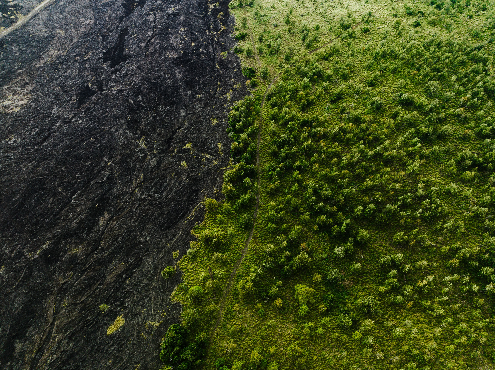

01
Causas
La tala, la expansión agrícola y el crecimiento urbano transforman rápidamente grandes áreas naturales.
Ver causas →Deforestación · Naturaleza · Sociedad
Cada árbol perdido altera un sistema completo: el suelo, el agua, la biodiversidad y la vida de las personas.
Una mirada visual al costo de perder los bosques.
Conoce HUELLA
Descubre el propósito de este recorrido y las ideas que explican por qué recuperar un bosque también significa cuidar a las personas.
La huella
La tala, la expansión agrícola y el crecimiento urbano transforman rápidamente grandes áreas naturales.
Ver causas →La pérdida forestal modifica ecosistemas, reduce biodiversidad y debilita la capacidad del suelo para retener agua.
Ver impactos →Proteger, restaurar y consumir responsablemente son acciones que ayudan a reducir la presión sobre los bosques.
Ver soluciones →
Dos realidades
Los bosques regulan ciclos naturales, ofrecen hábitat a miles de especies y sostienen actividades humanas. Cuando son reemplazados, ese equilibrio cambia.
Comprender el impactoHUELLA
“Un bosque no es solamente un conjunto de árboles. Es una red de vida.”Ver relación con la sociedad